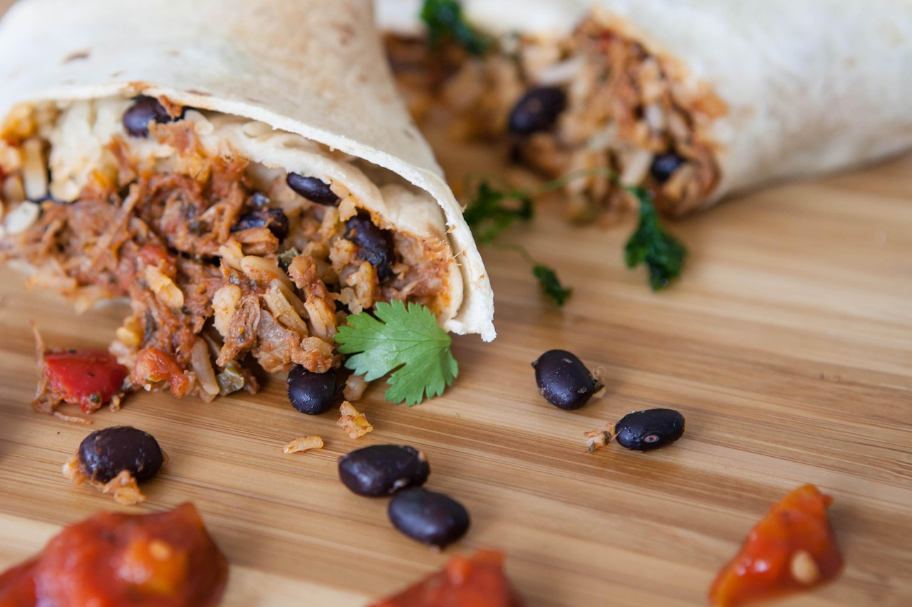

Black Bean Burrito
Home

Description
A popular dish done right, a good balance of flavourful ingredients and vegetables with a tiny bit of spice to cap it off.
Ingredients
- 2 (10 inch/25cm) flour tortillas
- 2 tablespoons of vegetable oil
- 1 small onion, chopped
- 1/2 red capsicum(bell peppers), chopped
- 1 teaspoon minced garlic
- 1 teaspoon minced japlepeno peppers
- 1 (15 ounce/425grams) can of black beans, rinsed and drained
- 3 ounces of cream cheese, cubed
- 1/2 tespoon salt
- 2 tablespoons chopped fresh coriander(cilantro)
Steps
- Gather all ingredients. Preheat the oven to 350 degrees farenheit (175 degrees Celsius). Wrap tortillas in foil.
- Bake wrapped tortillas in the preheated oven until heated through, about 15 minutes
- Meanwhile, heat oil in a 10 inch (25cm) skillet over medium heat. Add, onion, bell pepper(capsicum),garlic, and japlepeno;cook and stir fo 2 minutes.
- Stir in beans and cook until heated through, about 3 minutes. Stir in cream cheese and salt; cook, stirring occasionally, for 2 minutes. Stir in cilantro(coriander).
- Spoon filling in a line across them middle of each tortilla. Fold opposing edges of the tortilla to overlap the filling. Roll 1 of the opposing edges around the filling creating a burrito. Serve immediately.